Guía completa del panel: agenda diaria, semanal y mensual, citas y series, cobros y tickets, cancelaciones con devolución, clientes, importación de la agenda en papel, anulaciones, cierres, avisos y recordatorios por email y WhatsApp, y configuración del negocio.
El panel de administración es donde se lleva el día a día de la peluquería: la agenda, los cobros, los clientes y la configuración. Solo lo ven las cuentas de tipo Administrador.
Entrar
Abre la app y pulsa Entrar.
Escribe el email y la contraseña de tu cuenta de administrador.
Entrarás directamente en el panel, en la sección Resumen.
Cambia la contraseña inicial. La cuenta de administrador que se crea al instalar la app tiene una contraseña provisional. Cámbiala la primera vez en Mi perfil (pulsando tu nombre arriba a la derecha).
Los administradores no reservan citas para sí mismos: por eso no ven Reservar ni Mis citas. Las citas de los clientes se crean desde la Agenda. En Mi perfil se indica el tipo de cuenta (Administrador) y puedes cambiar tu foto, tus datos, tu contraseña y el tema claro u oscuro.
Secciones
Las pestañas de la parte superior del panel dan acceso a cada sección:
En una tableta o un móvil, las pestañas se reparten en varias filas.
Pestaña
Para qué sirve
Resumen
Cifras del día y del mes y estado de las integraciones (email, WhatsApp, pagos).
Agenda
Ver las citas en lista, por semana o por mes. Crear, mover, cobrar, emitir tickets y cancelar (con devolución si está pagada).
Usuarios
Alta, edición, bloqueo, baja y reactivación de clientes y administradores. Ficha con el historial de cada cliente.
Importar agenda
Pasar a la app las citas de la agenda en papel a partir de fotos.
Anulaciones
Histórico por cliente de citas anuladas y ausencias.
Cierres
Vacaciones, festivos o ausencias: bloquean las reservas en esas fechas.
Avisos email
Enviar emails a todos los clientes, a los que tienen cita un día o a clientes elegidos.
WhatsApp
Preparar mensajes de WhatsApp a los clientes con el texto ya escrito.
Configuración
Duración de las citas, horario, recordatorios automáticos, formas de pago, datos de la peluquería, tickets, servicios y precios.
Reglas básicas que conviene conocer
Las citas duran 30 minutos y el horario es de 9:00 a 13:00 y de 16:00 a 20:00, de lunes a viernes (sábado y domingo, cerrado). Ambas cosas se cambian en Configuración.
Los clientes pueden reservar hasta 1 año vista y cambiar o anular hasta 1 hora antes. El administrador puede hacerlo en cualquier momento.
Las citas se pagan online con PayPal al reservar o en el local (efectivo). Las que crea el administrador se pagan en el local.
Al cancelar una cita pagada se devuelve el dinero si corresponde. Las citas ya realizadas no se cancelan ni se reembolsan, y lo cobrado en el local es definitivo (ver capítulo 5).
Una cita confirmada pasa sola a Realizada cuando termina su hora. Solo hay que marcar las que el cliente no vino.
Las citas nunca se borran: las anuladas se conservan para el historial y las estadísticas.
02Resumen
Es la primera pantalla del panel. Da una foto rápida del negocio.
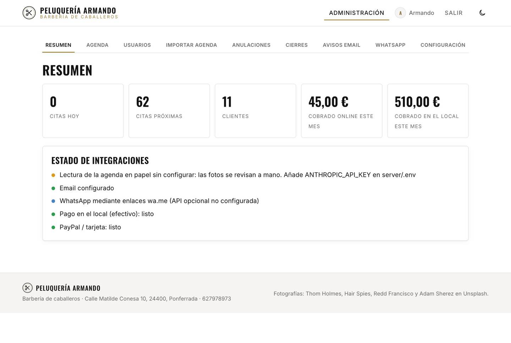
Figura 2.1 · Resumen del panel
Citas hoy y Citas próximas: confirmadas para hoy y en adelante.
Clientes: clientes con cuenta activa o bloqueada.
Cobrado online este mes y Cobrado en el local este mes: lo cobrado en el mes en curso, ya descontados los reembolsos.
En Estado de integraciones verás si la lectura de la agenda en papel, el email, WhatsApp y cada forma de pago están listos. Un punto verde indica que funciona; naranja, que está en modo prueba; azul, que funciona en modo básico.
Si el email aparece «en modo prueba», los emails no llegan a los clientes: falta configurar el servidor de correo (SMTP). Es una tarea técnica que se hace una sola vez en el servidor.
03Agenda
La Agenda es la pantalla principal del día a día. Tiene tres vistas: Lista, Semana y Mes. La app recuerda la última vista que usaste.
Figura 3.1 · Barra de la agenda: vistas, navegación y filtro de estado
Lista / Semana / Mes: cambia la forma de ver las citas.
‹ › y Hoy (en Semana y Mes): pasa a la semana o el mes anterior o siguiente, o vuelve al actual.
Estado: muestra solo las citas en un estado (Confirmada, Realizada, Cancelada, No se presentó, Pendiente de pago). Las confirmadas cuya hora ya ha pasado cuentan como «Realizada». En Semana y Mes las canceladas no se muestran, salvo que elijas «Cancelada» en este filtro.
Nueva cita: crea una cita para un cliente (ver capítulo 4).
Vista Lista
Muestra las citas agrupadas por día, con todas sus opciones. El título de cada día indica cuántas hay confirmadas y realizadas. Usa los botones Hoy, Mañana y 7 días, o elige un rango con Desde y Hasta.
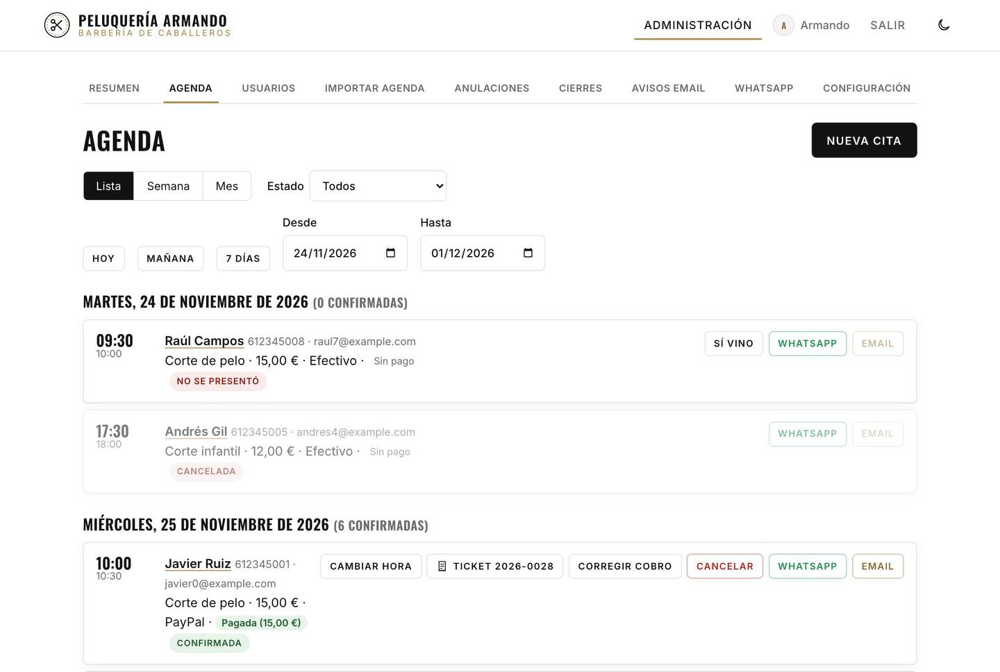
Figura 3.2 · Vista Lista con las citas de los próximos 7 días
Vista Semana
Una columna por día (de lunes a domingo) y una fila por franja horaria. Cada cita aparece en su hueco con el nombre del cliente y el servicio.
El punto de la esquina indica el pago: verde, pagada; rojo, pendiente de cobro.
Las citas ya pasadas (realizadas o «No vino») aparecen en gris; las pendientes de pago online, con el borde discontinuo.
Los días y horas en que la peluquería está cerrada aparecen rayados. La línea doble separa la mañana de la tarde.
El día de hoy aparece resaltado en la cabecera, con el número de citas de cada día.
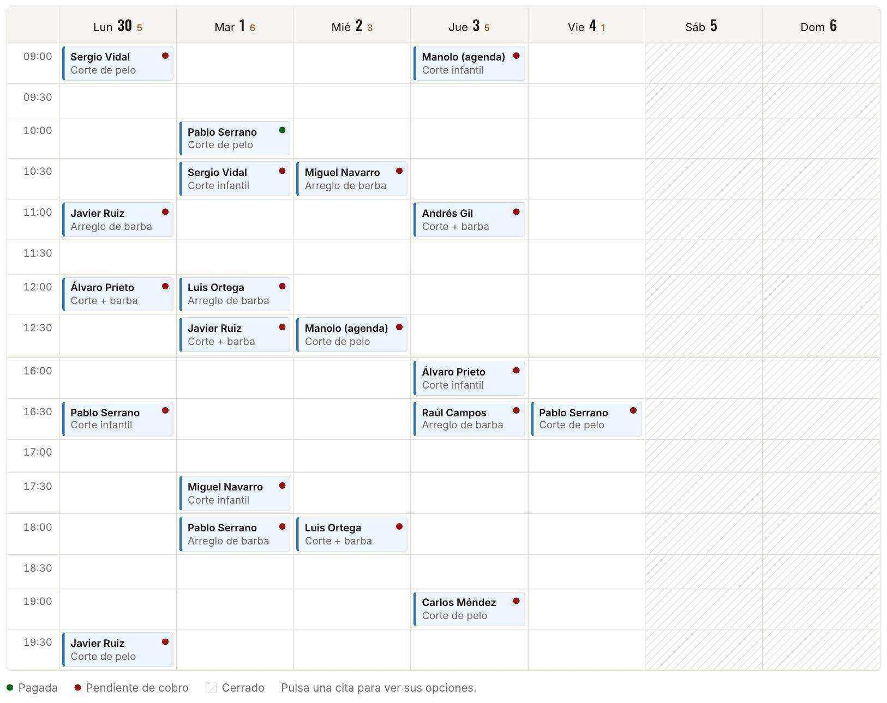
Figura 3.3 · Vista Semana
Pulsa una cita para abrir una ventana con todos sus datos y botones (cambiar hora, cobrar, ticket, cancelar, WhatsApp, email).
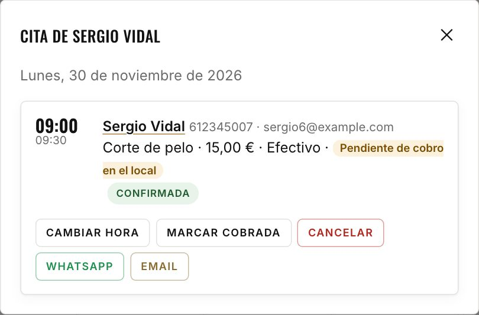
Figura 3.4 · Ventana de una cita abierta desde la vista Semana
En el móvil la semana no cabe en la pantalla: desliza la tabla hacia los lados. La columna de las horas se queda fija.
Vista Mes
Un calendario del mes completo. Cada día indica cuántas citas tiene y las primeras con su hora. El número en un círculo naranja, arriba a la derecha, indica cuántas citas de ese día están pendientes de cobro.
Figura 3.5 · Vista Mes
Pulsa un día para ver debajo todas sus citas con sus botones, igual que en la vista Lista.
Figura 3.6 · Citas del día elegido en la vista Mes
La tarjeta de una cita
Cada cita muestra la hora, el cliente (su nombre es un enlace a su ficha), su teléfono y email, el servicio, el precio, la forma de pago, el estado del pago y el estado de la cita. Los botones cambian según la situación:
Situación
Botones principales
Próxima, pendiente de cobro en el local
Cambiar horaMarcar cobradaCancelar
Cobrada en el local, sin ticket
▤ Generar ticketCancelar (Cancelar, solo si aún no ha terminado)
Próxima, cobrada en el local con ticket
Cambiar hora▤ Ticket 2026-…Cancelar
Próxima, pagada con PayPal
Cambiar hora▤ Ticket 2026-…Corregir cobroCancelar
Realizada y pagada
▤ Ticket 2026-… (sin Cancelar ni devolución)
Ha llegado su hora y no está cobrada en el local
No vino
Marcada como «No vino»
Sí vino (sin Marcar cobrada) y Reembolsar si se pagó con PayPal
Ya terminada
Sin Cambiar hora, Cancelar ni Corregir cobro
Siempre
WhatsApp (si el cliente tiene teléfono) y Email (activo si el cliente tiene email y la cita está confirmada y no ha empezado)
Figura 3.7 · Pendiente de cobro
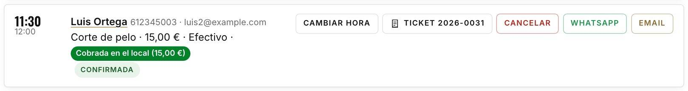
Figura 3.8 · Cobrada en el local con ticket
Figura 3.9 · Pagada con PayPal: ticket, Corregir cobro y Cancelar
04Gestionar citas
Crear una cita para un cliente
En la Agenda, pulsa Nueva cita.
Escribe el nombre, email o teléfono del cliente en Buscar cliente y pulsa su nombre en la lista. Si no existe, créalo antes en Usuarios (capítulo 6).
Elige el servicio.
Elige el día con las flechas o el calendario y pulsa una hora libre.
Si quieres, escribe una nota interna (aparece en la tarjeta de la cita en la Agenda).
Pulsa Crear cita. El cliente recibe un email de confirmación.
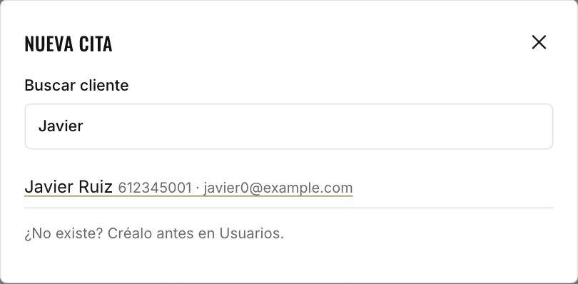
Figura 4.1 · Buscar al cliente
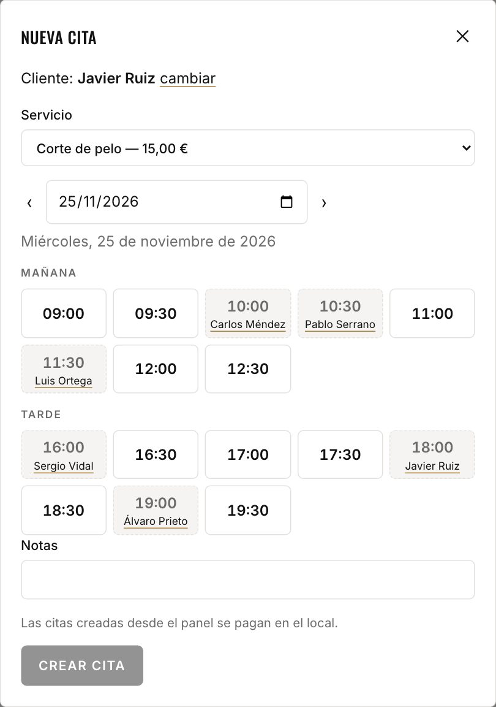
Figura 4.2 · Elegir servicio y hora
Horas ocupadas. Al elegir la hora, el administrador ve las horas ocupadas en gris con el nombre del cliente que las tiene. Pulsando el nombre se abre su ficha. Los clientes nunca ven quién ocupa una hora.
Las citas creadas desde el panel se pagan en el local. El pago online solo lo puede hacer el propio cliente desde su cuenta.
Citas periódicas para un cliente
En Nueva cita, tras elegir la primera hora, marca Repetir periódicamente.
Elige cada cuánto (1 semana, 2 semanas, 15 días, 3 semanas, 4 semanas, 30 días u Otro…) y hasta cuándo (una fecha o un número de citas).
Revisa la lista: las fechas que caen en día cerrado u ocupado se mueven al hueco libre más cercano. Puedes cambiar o quitar cualquiera.
Pulsa Crear N citas. Se crean todas o ninguna.
Las citas de una serie llevan el distintivo «cada N días». Al cancelar una, puedes cancelar también las siguientes de la serie.
Cambiar la hora
Pulsa Cambiar hora en la cita.
Elige el nuevo día y la nueva hora.
Pulsa Guardar. El cliente recibe un email con la nueva hora. El pago y el ticket se mantienen.
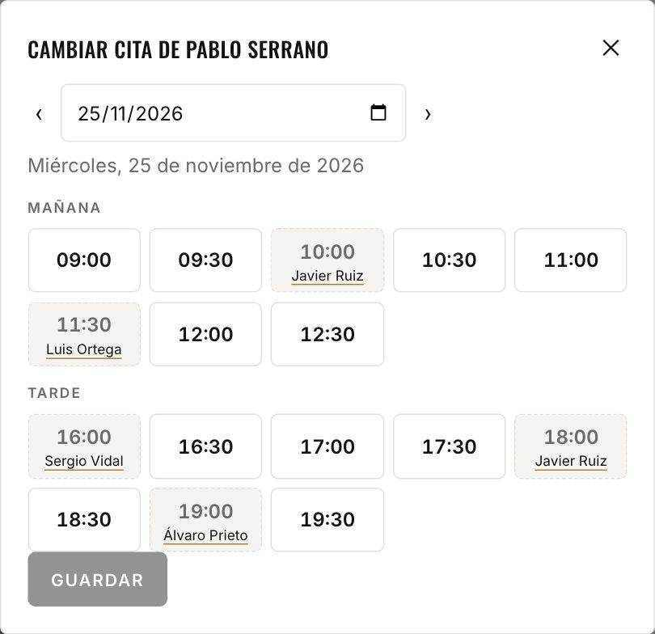
Figura 4.3 · Cambiar la hora
El administrador puede mover una cita en cualquier momento, aunque falte menos de una hora.
Realizada, «No vino» y «Sí vino»
No hace falta marcar las citas como realizadas: una cita confirmada se muestra como Realizada cuando termina su hora y, desde ese momento, ya no se puede mover ni cancelar. Solo tienes que apuntar las ausencias:
Cuando llegue la hora de la cita y el cliente no se presente, pulsa No vino. La ausencia cuenta en Anulaciones y en la ficha del cliente.
Si te has equivocado, pulsa Sí vino: la cita vuelve a estar como antes y la ausencia desaparece del histórico. Puedes corregirlo las veces que haga falta.
Los dos botones están en la Agenda y en la ficha del cliente. No cambian el cobro ni el ticket.
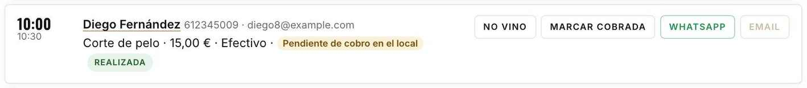
Figura 4.4 · Cita pasada sin cobrar, con el botón No vino
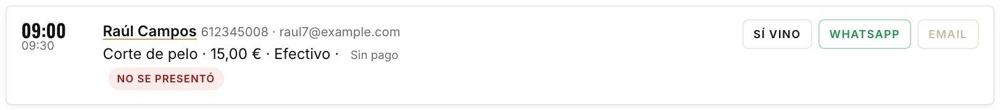
Figura 4.5 · Cita marcada como «No vino», con el botón Sí vino para corregirla
La cita está…
¿Se puede marcar «No vino»?
Pendiente de cobro
Sí.
Pagada con PayPal
Sí: pudo pagar al reservar y no venir.
Cobrada en el local
No: si pagó allí, vino.
Una cita marcada como «No vino» no se puede cobrar en el local ni cuenta como pendiente de cobro. Para cobrarla, pulsa antes Sí vino.
Cancelar una cita
Pulsa Cancelar en la cita.
Escribe el motivo (se incluye en el email al cliente).
Si está pagada con PayPal, elige Devolver todo (viene marcado), Devolver otra cantidad o No devolver nada. Si está cobrada en el local, deja marcado Devolver X € en mano si vas a devolver el dinero.
Deja marcado Avisar al cliente por email si quieres que se le notifique.
Si la cita es de una serie, puedes marcar Cancelar también las siguientes citas de esta serie.
Pulsa Cancelar cita (o Cancelar y devolver X €).
Figura 4.6 · Cancelar una cita
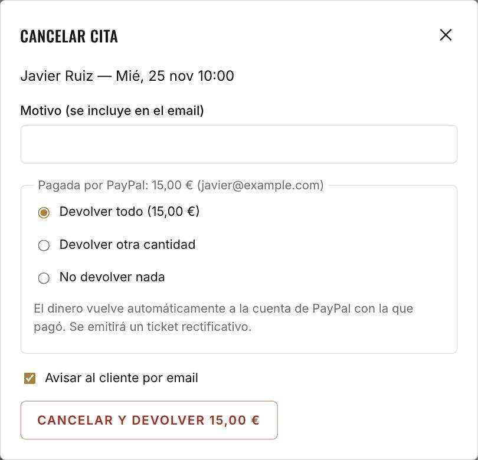
Figura 4.7 · Cancelar una cita pagada con PayPal
El dinero de PayPal se devuelve antes de cancelar: si PayPal falla, la cita no se cancela y la app te lo dice.
Si tenía ticket, la devolución genera su ticket rectificativo (capítulo 5).
Una cita que ya ha terminado no se puede cancelar.
Escribir al cliente por WhatsApp
El botón WhatsApp de cada cita abre una conversación con el cliente con un mensaje ya escrito sobre su cita. Solo tienes que revisarlo y enviarlo.
Enviar un recordatorio por email
Junto al botón de WhatsApp está Email, que envía al cliente el recordatorio de su cita. Además de los recordatorios automáticos (capítulo 12), puedes mandarlo a mano cuando quieras:
Pulsa Email. En la Agenda recuerda esa cita; en la lista de Usuarios y en la ficha del cliente, su próxima cita confirmada.
Revisa el destinatario, el asunto y el texto (se cambian en Configuración → Recordatorios de citas).
Pulsa Enviar email.
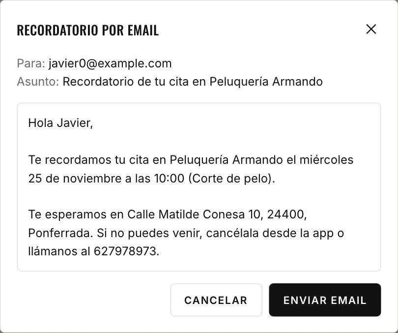
Figura 4.8 · Recordatorio por email antes de enviarlo
El botón aparece desactivado si el cliente no tiene email o la cita no está confirmada o ya ha empezado.
Puedes enviarlo más de una vez y aunque el cliente no reciba los automáticos. No los sustituye ni los anula.
El último envío a mano de cada cita queda en la lista de últimos avisos de Configuración como «enviado a mano».
Si el servidor de correo (SMTP) no está configurado, la ventana te avisa: el email no llega al cliente y no consta como enviado.
05Cobros, tickets y devoluciones
Cada cobro puede tener su ticket de compra. Los tickets tienen una numeración única y consecutiva, común a los pagos online y a los del local.
Cómo funcionan los tickets
Numeración: año-número de 4 cifras, por ejemplo 2026-0001, 2026-0002… Empieza en 0001 cada año y es la misma serie para PayPal y efectivo.
Pagos online: el ticket se genera solo al completar el pago. Una serie pagada de una vez lleva un único ticket con todas sus citas.
Pagos en el local: lo generas tú al cobrar, o más tarde.
Datos fiscales: el ticket muestra el nombre o razón social, el NIF, la dirección, el desglose de IVA y el texto al pie que pongas en Configuración → Tickets de compra. El IVA se guarda en cada ticket: si lo cambias más adelante, los ya emitidos no varían.
Archivo: los PDF se guardan en el servidor, en carpetas por año y mes. Cliente y administrador pueden verlos y descargarlos desde la app.
Cobrar una cita en efectivo
En la cita, pulsa Marcar cobrada.
La ventana muestra el cliente, el servicio y el importe.
Deja marcada la casilla Generar ticket de compra (viene marcada) o desmárcala si no quieres ticket ahora.
Pulsa Cobrar y generar ticket (o Marcar como cobrada).
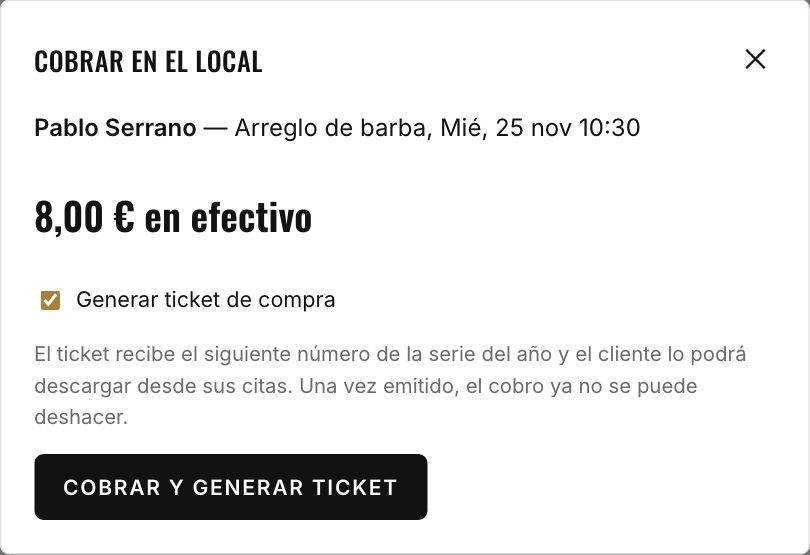
Figura 5.1 · Cobrar en el local con ticket
La cita pasa a Cobrada en el local y, si generaste ticket, aparece su botón ▤ Ticket 2026-…. El cliente también lo verá en sus citas.
El cobro es definitivo. Una vez marcada como cobrada no se puede deshacer, así que comprueba que es la cita correcta antes de confirmar.
Generar el ticket más tarde
Si una cita está cobrada pero no tiene ticket, aparece el botón ▤ Generar ticket. Al pulsarlo se emite con el siguiente número disponible. También sirve para pagos online cuyo ticket no se hubiera podido generar.
Figura 5.2 · Cita cobrada sin ticket, con el botón Generar ticket
Ver y descargar un ticket
Pulsa el botón ▤ Ticket 2026-… de la cita (en la Agenda o en la ficha del cliente).
Se abre la vista previa del ticket.
Pulsa Descargar PDF para guardarlo o imprimirlo.
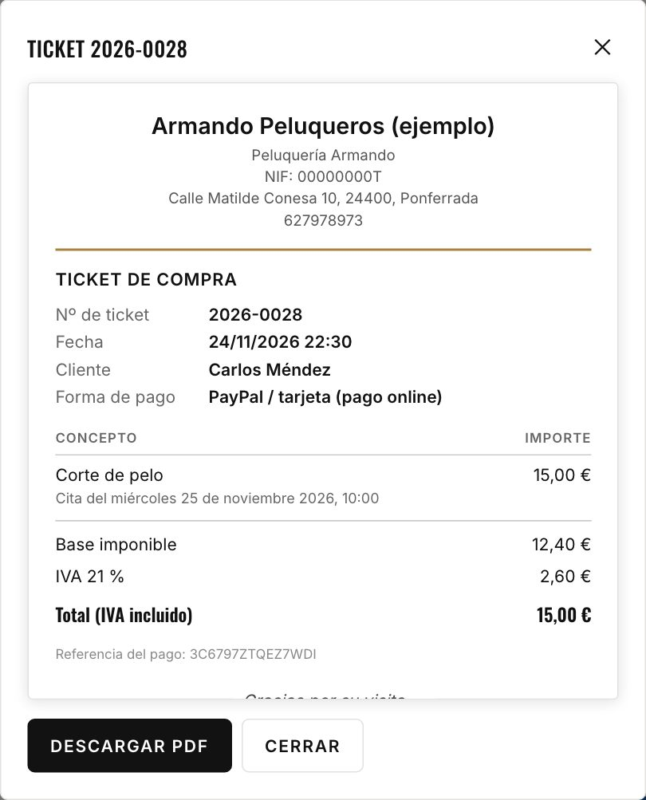
Figura 5.3 · Vista previa del ticket
Cuándo se devuelve dinero
Cita
Qué se puede hacer
Próxima, pagada con PayPal
El cliente la cancela hasta 1 hora antes y se le devuelve todo. Tú puedes cancelarla hasta que termine, devolviendo todo, una parte o nada.
Próxima, cobrada en el local
Solo la cancelas tú, y devuelves el dinero en mano si corresponde. El cliente tiene que llamar.
Realizada
No se cancela ni se reembolsa.
«No vino», pagada con PayPal
No se devuelve nada, salvo que tú pulses Reembolsar.
Las devoluciones de PayPal se hacen solas desde la app y el dinero vuelve a la misma cuenta o tarjeta con la que pagó el cliente. Por eso la app guarda los datos de cada pago de PayPal.
Reembolsar a un cliente que no vino
Es decisión tuya. En una cita marcada como «No vino» y pagada con PayPal:
Pulsa Reembolsar.
Revisa los datos del pago e indica el importe a devolver (todo o una parte).
Escribe, si quieres, una nota y pulsa Reembolsar X €. El cliente recibe un email.
Figura 5.4 · Reembolsar el pago de PayPal de una ausencia
Si después pulsas Sí vino y ya se había devuelto todo, la cita queda pendiente de cobro en el local.
Corregir un cobro de PayPal
Para errores del pago online (un cobro duplicado, un importe equivocado…) en citas que aún no han terminado. La cita no se cancela.
Pulsa Corregir cobro en la cita.
Indica el importe a devolver y el motivo (obligatorio; lo verá el cliente).
Pulsa Devolver X €. El cliente recibe un email.
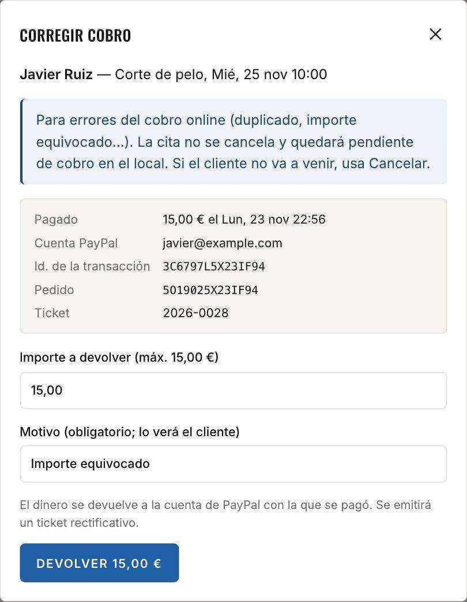
Figura 5.5 · Corregir un cobro de PayPal
Si devuelves todo, la cita queda pendiente de cobro en el local. En los cobros en el local no existe esta opción.
Tickets rectificativos
Cada vez que se devuelve dinero de un cobro con ticket, la app emite sola un ticket rectificativo. El ticket original se conserva.
Numeración propia:R2026-0001, R2026-0002… consecutiva y por año, aparte de la de los tickets.
Contenido: el ticket que corrige y su fecha, el motivo, y el importe devuelto con su base e IVA en negativo.
Dónde está: junto al ticket, en la Agenda, en la ficha del cliente y en las citas del propio cliente. Se ve y se descarga en PDF igual.
Si la cita no tenía ticket o no se devuelve nada, no se emite.
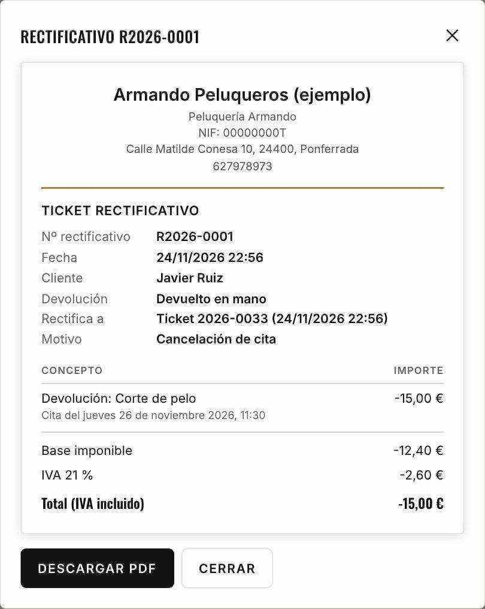
Figura 5.6 · Ticket rectificativo
06Usuarios
Aquí se gestionan las cuentas de clientes y administradores.
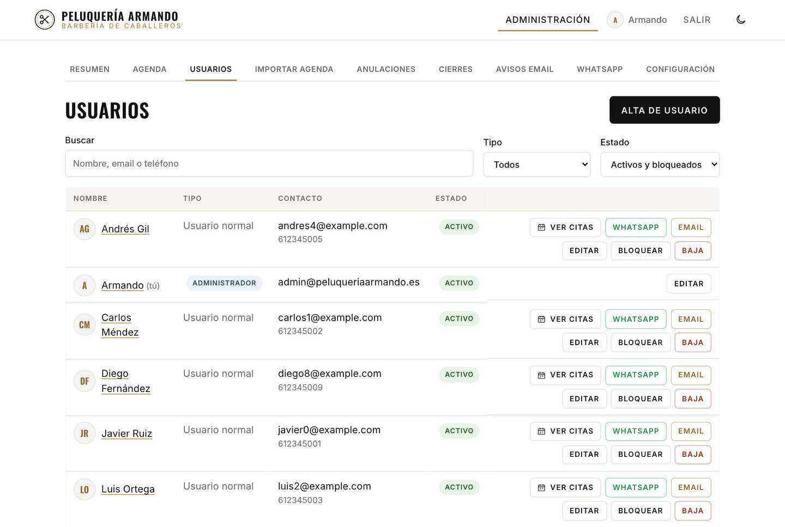
Figura 6.1 · Lista de usuarios
Lista y filtros
Buscar: por nombre, email o teléfono.
Tipo: clientes (usuarios normales) o administradores.
Estado: activos, bloqueados o de baja.
En cada fila tienes Ver citas (abre la ficha del cliente), WhatsApp, Email (recordatorio de su próxima cita), Editar, Bloquear o Desbloquear, y Baja o Reactivar.
Dar de alta un usuario
Pulsa Alta de usuario.
Elige el tipo: Usuario normal (reserva y gestiona sus citas) o Administrador (acceso completo al panel; no reserva citas propias).
Si quieres, añade una foto.
Escribe nombre, email, teléfono y una contraseña inicial (mínimo 8 caracteres). Comunícasela al usuario para que la cambie en su perfil.
Elige sus recordatorios de citas (por email y/o por WhatsApp). Solo se pueden activar los que estén activados en Configuración.
Marca o no Acepta novedades y promociones por email.
Pulsa Guardar.
Figura 6.2 · Alta de usuario
Editar
Con Editar puedes cambiar los datos de una cuenta, su tipo, su foto, sus recordatorios de citas o ponerle una contraseña nueva (por ejemplo, si un cliente la ha olvidado). No puedes quitarte a ti mismo el rol de administrador.
Bloquear y desbloquear
Pulsa Bloquear en el usuario.
Indica hasta qué fecha (déjalo vacío para un bloqueo indefinido) y el motivo.
Marca Cancelar también sus citas futuras (con reembolso) si quieres anularlas.
Pulsa Bloquear.
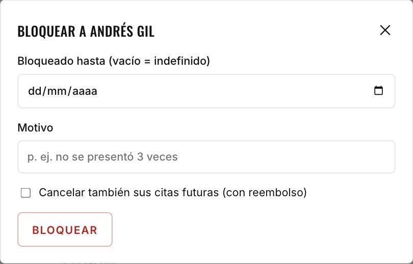
Figura 6.3 · Bloquear a un cliente
Un cliente bloqueado no puede reservar ni modificar citas hasta la fecha indicada (después se desbloquea solo). Para levantar el bloqueo antes, pulsa Desbloquear.
Baja y reactivación
Baja desactiva la cuenta y cancela sus citas futuras (con reembolso de las pagadas online). El historial de citas y pagos se conserva. Para recuperar la cuenta, filtra por De baja y pulsa Reactivar.
Figura 6.4 · Confirmar la baja
Al bloquear con cancelación, dar de baja, crear un cierre o cancelar una serie, las citas cobradas en el local no se cancelan automáticamente: la app te avisa de cuántas quedan para que las canceles una a una.
Ficha del cliente
Pulsa Ver citas en la lista, o el nombre del cliente en cualquier cita, para abrir su ficha:
Cabecera: foto, nombre, email, teléfono, tipo y estado, los recordatorios que recibe, y los botones de WhatsApp y Email.
Cifras: citas próximas, pasadas, canceladas, ausencias («No vino»), total pagado y pendiente de cobro.
Citas: todas, con filtros Todas, Próximas, Pasadas y Anuladas y no vino. Las próximas aparecen en azul y las pasadas en gris. Cada una indica si está pagada y con qué método.
Desde cada cita puedes cobrar, generar o ver los tickets, corregir un cobro de PayPal y apuntar o corregir si el cliente vino, igual que en la Agenda.
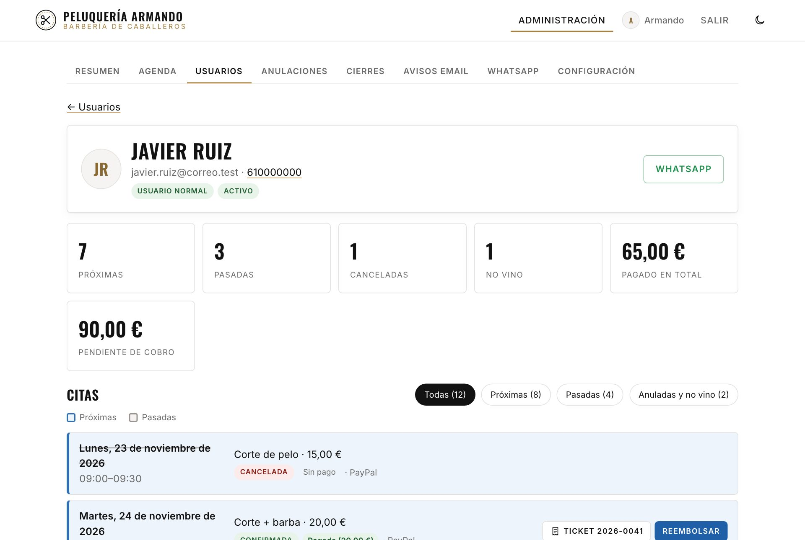
Figura 6.5 · Ficha de un cliente
07Importar la agenda en papel
Para empezar a usar la app sin volver a escribir todas las citas: fotografías las páginas de la agenda, la app lee el día, las horas y los nombres, y tú lo revisas antes de importarlo.
Subir las fotos
Abre la pestaña Importar agenda.
Pulsa Subir fotos para elegir una o varias, o Hacer foto (icono de cámara) para hacerlas en ese momento. Este botón solo aparece en el móvil y la tableta.
Haz una foto por página (o por las dos páginas abiertas), recta y con buena luz. Solo hacen falta las páginas con citas de hoy en adelante.
Cada foto se lee en segundo plano. Cuando esté lista aparecerá como Por revisar.
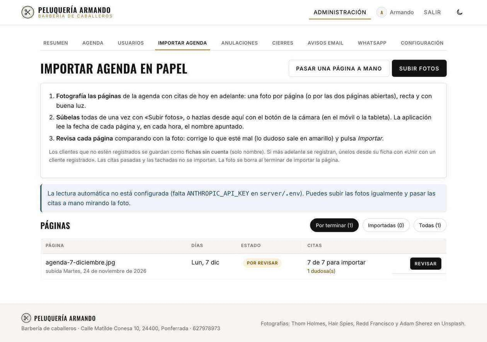
Figura 7.1 · Páginas subidas. Aviso azul: lectura automática sin configurar
Si una foto aparece como No se pudo leer, pulsa Volver a leer o pasa sus citas a mano. Con Pasar una página a mano puedes escribir citas sin foto.
Lectura automática. Necesita una clave de la API de Claude (Anthropic) en el servidor. Las fotos se envían a ese servicio para leerlas. Sin la clave puedes subir las fotos igualmente y pasar las citas a mano mirándolas.
Revisar e importar
Pulsa Revisar en la página. La foto queda al lado de las citas leídas; púlsala para ampliarla.
Corrige lo que haga falta: fecha, hora, nombre, cliente y servicio. Lo dudoso o incompleto sale en amarillo.
Comprueba el cliente. Si el nombre coincide exactamente con el de un único cliente, se asigna solo; si se parece a alguno, te pide que elijas. Ficha nueva crea un cliente solo con el nombre.
Usa + Añadir cita para las que falten y desmarca o quita las que no quieras importar.
Pulsa Importar N cita(s). Si lo dejas a medias, pulsa antes Guardar cambios.
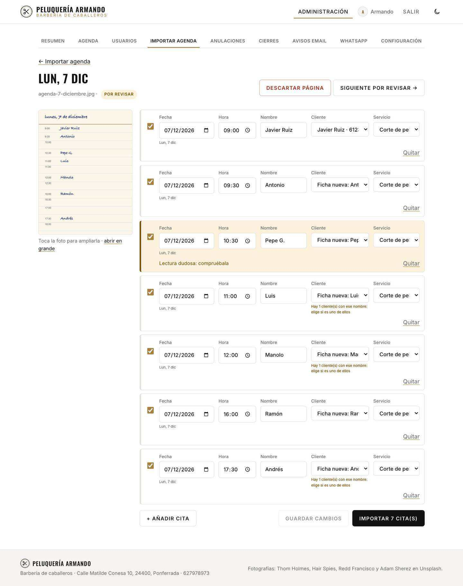
Figura 7.2 · Revisar una página antes de importarla
Las citas pasadas y las tachadas no se importan.
Si alguna no se puede importar (hora ocupada o que no encaja en los huecos de la agenda), se marca en rojo con el motivo. Corrígela y vuelve a pulsar Importar.
Si subes dos veces la misma página, las citas no se duplican.
Al terminar la página, la foto se borra. Descartar página borra la foto y lo leído; las citas ya importadas se quedan.
Fichas sin cuenta
Los clientes que no estaban registrados se guardan como fichas sin cuenta: solo con su nombre, sin acceso a la app y sin emails. En Usuarios llevan el distintivo «Sin cuenta».
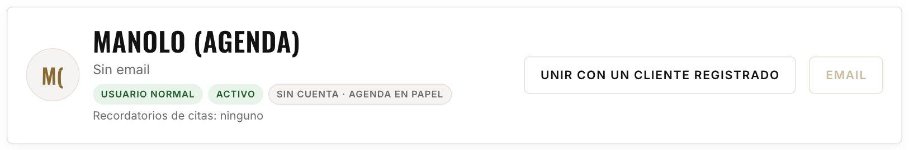
Figura 7.3 · Ficha sin cuenta creada desde la agenda en papel
Cuando el cliente se registre, pasa sus citas a su cuenta:
Abre la ficha sin cuenta y pulsa Unir con un cliente registrado.
Busca al cliente, márcalo y pulsa Unir con …. Sus citas pasan a él y la ficha se borra.
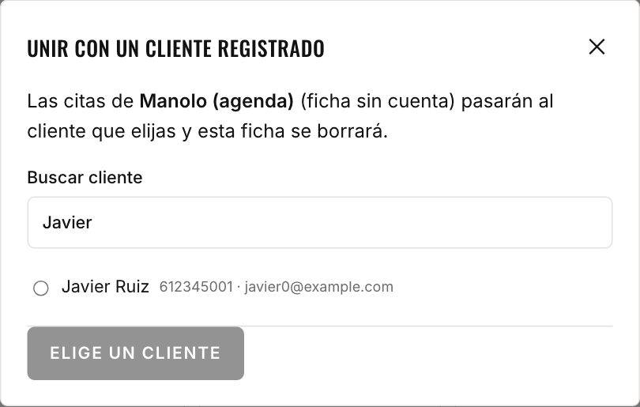
Figura 7.4 · Unir una ficha con un cliente registrado
También puedes darle acceso tú: pulsa Editar en Usuarios y ponle email y contraseña.
08Anulaciones y ausencias
Histórico por cliente de las citas anuladas y de las ausencias. Ayuda a detectar a quién conviene recordar las citas o, llegado el caso, bloquear.
Abre la pestaña Anulaciones.
Elige el periodo: Este año, Últimos 12 meses, Todo o Fechas (desde / hasta).
Pulsa el título de una columna para ordenar por ella.
Pulsa Ver citas o el nombre del cliente para abrir su ficha con el filtro Anuladas y no vino ya aplicado.
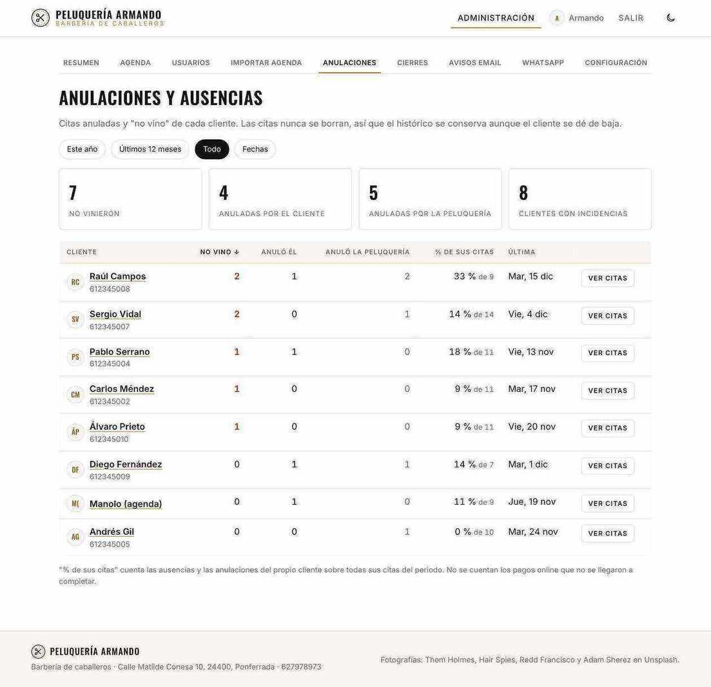
Figura 8.1 · Anulaciones y ausencias por cliente
Columna
Qué cuenta
No vino
Citas marcadas como «No vino» (en rojo si hay alguna). Si una está mal, corrígela con «Sí vino» en la ficha del cliente.
Anuló él
Citas que anuló el propio cliente.
Anuló la peluquería
Citas que anuló el administrador (cierres, bloqueos, imprevistos…).
% de sus citas
Ausencias + anulaciones del cliente sobre el total de sus citas del periodo.
Última
Fecha de la última incidencia.
Arriba se muestran los totales del periodo. No se cuentan los pagos online que el cliente no llegó a completar. Como las citas nunca se borran, el histórico se conserva aunque el cliente se dé de baja.
Figura 8.2 · Ficha del cliente con el filtro «Anuladas y no vino»
09Cierres temporales
Vacaciones, festivos, formación o cualquier ausencia. Durante un cierre los clientes no pueden reservar.
Abre la pestaña Cierres.
Elige Desde y Hasta. Para cerrar solo unas horas, rellena también las horas (opcional); sin horas, se cierran los días completos.
Escribe el motivo (por ejemplo, «Vacaciones de verano»).
Si ya hay citas en esas fechas, decide si marcar Cancelar las citas existentes en ese periodo, reembolsar y avisar por email.
Pulsa Crear cierre.
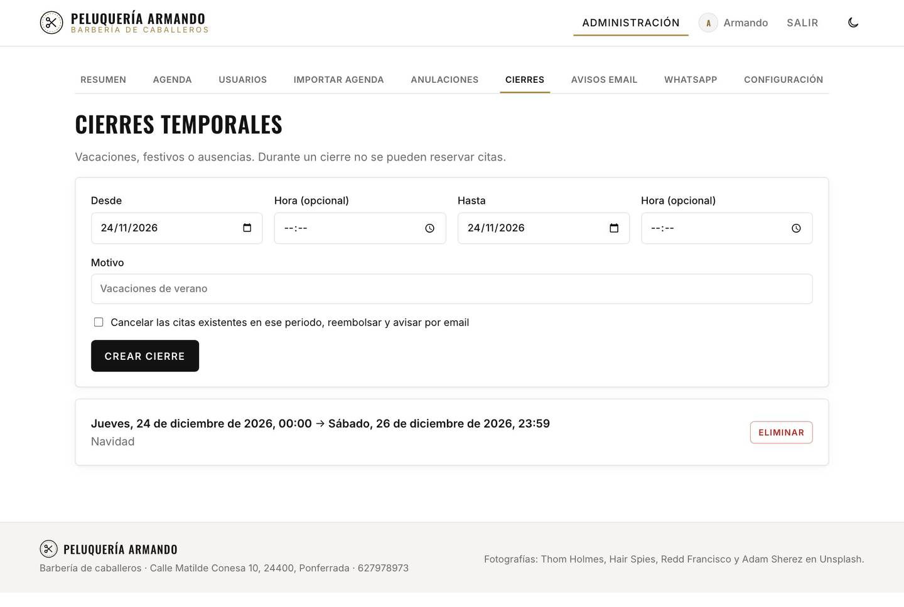
Figura 9.1 · Cierres temporales
Si no marcas la cancelación y hay citas en el periodo, la app te avisa de cuántas siguen activas para que las revises en la Agenda.
Los cierres programados aparecen debajo. Pulsa Eliminar para quitar uno: las fechas vuelven a estar disponibles.
En la Agenda, los días y horas cerrados aparecen rayados.
Después de crear un cierre, usa Avisos email con la plantilla «Cierre por vacaciones» para avisar a todos los clientes.
10Avisos por email
Envía un email a muchos clientes a la vez: cierres, cambios de horario, promociones o recordatorios.
Abre la pestaña Avisos email.
Elige los destinatarios:
Todos los clientes que aceptan emails.
Clientes con cita el día… (elige la fecha): útil para avisar de un retraso o un cambio.
Elegir clientes: marca uno a uno los que quieras.
Pulsa una plantilla (Cierre por vacaciones, Recordatorio, Promoción) para empezar con un texto ya escrito, o escribe el tuyo.
Escribe el asunto y el mensaje. Pon {nombre} donde quieras que aparezca el nombre de cada cliente.
Pulsa Enviar a N cliente(s).
Figura 10.1 · Avisos por email y últimos envíos
En Últimos envíos queda el registro de cada envío con la fecha, el asunto y el número de destinatarios.
Los clientes que no aceptan novedades y promociones por email no reciben estos envíos generales. Los emails de sus propias citas (confirmación, cambios y anulaciones) sí los reciben siempre. Los recordatorios dependen de su propia casilla en el perfil (capítulo 12).
11WhatsApp
Prepara un mensaje de WhatsApp para varios clientes. La app genera un enlace por cliente con el texto ya escrito; al pulsarlo se abre WhatsApp (en el móvil, en el ordenador o en WhatsApp Web) y solo tienes que enviarlo.
Abre la pestaña WhatsApp.
Elige los destinatarios: todos los clientes, los que tienen cita un día o clientes elegidos.
Escribe el mensaje. {nombre} se sustituye por el nombre de cada cliente.
Pulsa Preparar enlaces.
En la lista, pulsa Abrir chat en cada cliente y envía el mensaje desde WhatsApp.
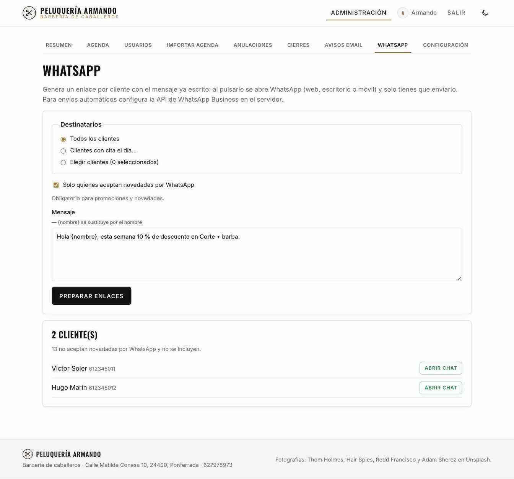
Figura 11.1 · Mensajes de WhatsApp preparados
Envío automático (opcional). Si se configura la API de WhatsApp Business en el servidor, aparece también el botón Enviar automáticamente (API), que envía los mensajes sin abrir cada chat. WhatsApp solo permite mensajes libres a clientes que te hayan escrito en las últimas 24 horas; fuera de ese plazo exige plantillas aprobadas por Meta.
Recuerda que cada cita de la Agenda y cada ficha de cliente tienen también su propio botón WhatsApp. El de la Agenda lleva escrito un mensaje sobre la cita; el de Usuarios y la ficha abre el chat sin texto.
12Configuración
Aquí se ajusta cómo funciona el negocio. Después de cambiar algo, pulsa Guardar configuración, abajo de la pantalla. Las citas ya reservadas no se modifican.
Citas
Figura 12.1 · Ajustes de las citas
Duración de cada cita: 30 minutos por defecto. Define los huecos de la agenda.
Citas a la vez (sillones): cuántos clientes se pueden atender a la misma hora.
Reservar hasta (días vista): 365 por defecto.
Antelación mínima para que el cliente cancele: 60 minutos por defecto.
Tiempo para completar el pago online: cuánto se guarda la hora mientras el cliente paga.
Citas periódicas
Figura 12.2 · Citas periódicas
Activa o desactiva que los clientes puedan reservar varias citas de una vez y el máximo de citas por serie (60 por defecto). Desde el panel siempre puedes crear series para un cliente.
Horario semanal
Figura 12.3 · Horario semanal por tramos
Cada día tiene uno o varios tramos (por ejemplo, 09:00–13:00 y 16:00–20:00). Cambia las horas directamente.
+ tramo añade un tramo; ✕ lo quita. Un día sin tramos queda Cerrado.
Recordatorios de citas
La app puede avisar sola a los clientes antes de su cita. Viene desactivado: marca Enviar automáticamente un aviso a los clientes antes de su cita, ajusta las opciones y guarda.
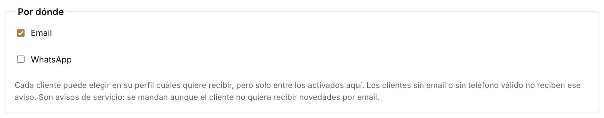
Figura 12.4 · Por dónde se envían los recordatorios
Email: necesita el servidor de correo (SMTP) configurado.
WhatsApp: necesita la API de WhatsApp Business. Para avisar a todos los clientes hace falta además una plantilla aprobada por Meta; su nombre se escribe aquí.
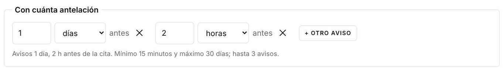
Figura 12.5 · Antelación: hasta 3 avisos por cita
Con cuánta antelación: de 1 a 3 avisos, cada uno entre 15 minutos y 30 días antes de la cita.
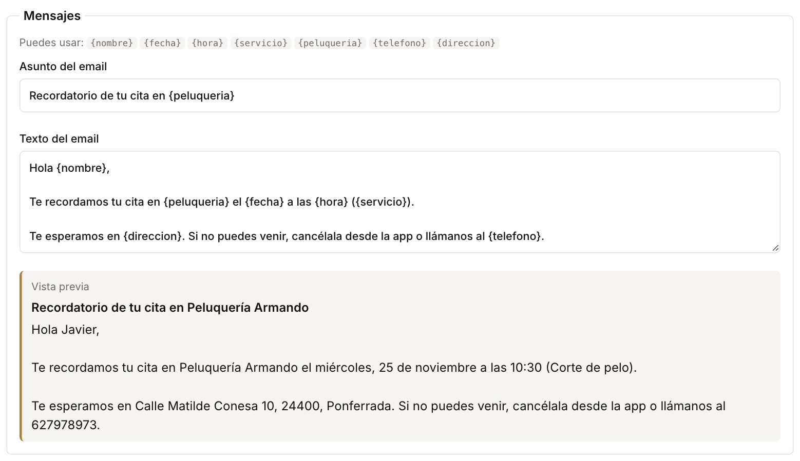
Figura 12.6 · Texto del recordatorio con vista previa
Mensajes: cambia los textos y usa {nombre}, {fecha}, {hora}, {servicio}, {peluqueria}, {telefono} y {direccion}, que se sustituyen en cada aviso. En Probar puedes enviarte uno de ejemplo.
Se avisa de las citas confirmadas, una vez por cada antelación. Si la cita cambia de hora se vuelve a avisar; las canceladas no se avisan.
Si se reserva cuando ya ha pasado el momento de un aviso, ese aviso no se manda.
Cada cliente elige en su perfil (o tú al editarlo) si recibe el aviso por email y/o por WhatsApp. Siempre se ven las dos opciones, pero solo se pueden activar las que estén activadas aquí.
Al desactivar un canal la app pide confirmación: al guardar, se apaga en todos los perfiles de cliente. Al volver a activarlo se enciende en todos, y cada cliente puede quitarlo después.
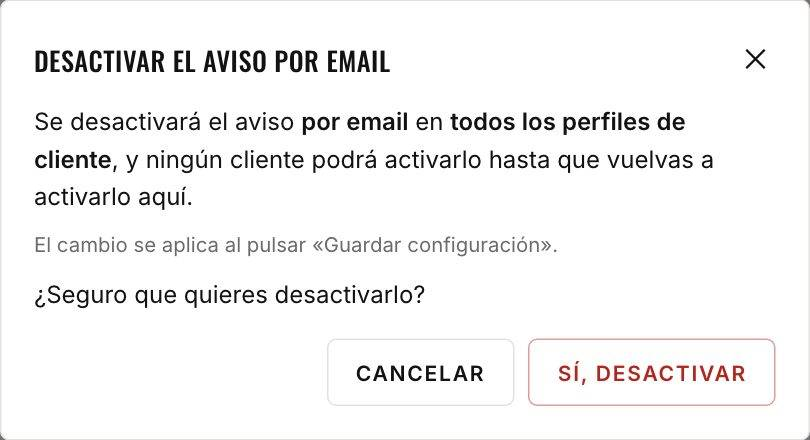
Figura 12.7 · Confirmación al desactivar un canal
En Últimos avisos puedes comprobar qué se ha enviado, a quién y, si no se envió, por qué.
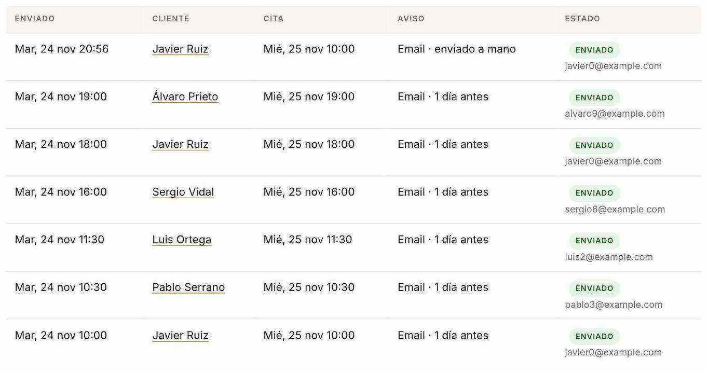
Figura 12.8 · Últimos avisos
Formas de pago
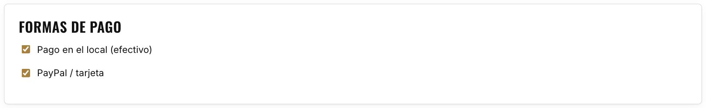
Figura 12.9 · Formas de pago
Activa o desactiva el pago en el local y PayPal. Si una forma de pago aparece con «faltan credenciales en el servidor», no se ofrecerá a los clientes hasta que se configure.
Datos de la peluquería
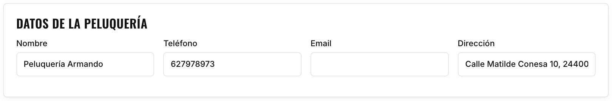
Figura 12.10 · Datos de la peluquería
Nombre, teléfono, email y dirección. Aparecen en la web, en los emails y en los tickets.
Tickets de compra
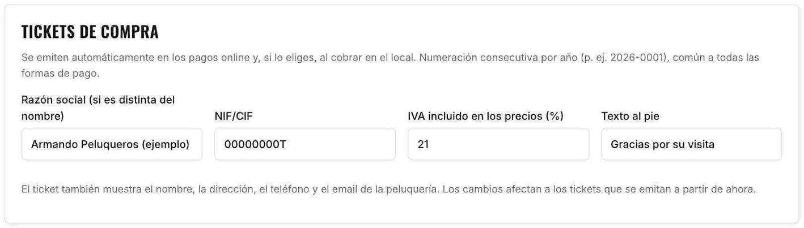
Figura 12.11 · Datos de los tickets
Razón social (si es distinta del nombre comercial) y NIF/CIF.
IVA incluido en los precios (%): 21 por defecto. El ticket desglosa la base imponible y el IVA. Pon 0 para no desglosarlo.
Texto al pie: por ejemplo, «Gracias por su visita».
Rellena el NIF y la razón social antes de entregar tickets a los clientes. Los cambios afectan a los tickets que se emitan a partir de ese momento.
Servicios y precios
Figura 12.12 · Servicios y precios
Precio: cambia el precio de un servicio. Las citas ya reservadas mantienen el precio con el que se reservaron.
Ocultar / Activar: un servicio oculto deja de ofrecerse, pero se conserva en el historial.
Para añadir un servicio, escribe su nombre y precio abajo y pulsa Añadir.
Los servicios se guardan al momento; no hace falta pulsar «Guardar configuración».
13Resumen de reglas y preguntas frecuentes
Reglas de un vistazo
Tema
Regla
Antelación del cliente
Reserva hasta 1 año vista. Cambia o anula hasta 1 hora antes. El administrador, siempre.
Pago online
Queda pagada y con ticket al momento. El cliente la cancela con al menos 1 hora de antelación y se le devuelve todo automáticamente.
Pago en el local
Se cobra con «Marcar cobrada»; el ticket es opcional en ese momento. El cobro es definitivo.
Cancelar una cita pagada
Solo antes de que termine. PayPal: devolver todo, una parte o nada. En el local: devolver en mano, y solo la cancelas tú.
Realizada y pagada
No se cancela ni se reembolsa.
Realizada
Automático al terminar la hora. Desde entonces no se mueve ni se cancela.
No vino / Sí vino
Desde que llega la hora. No si está cobrada en el local; con PayPal, sí. «Sí vino» lo corrige.
Recordatorios
Automáticos según Configuración y el perfil del cliente. A mano, con «Email» o «WhatsApp».
Corregir cobro
Solo pagos de PayPal de citas que no han terminado. No cancela la cita.
Tickets rectificativos
Automáticos al devolver un cobro con ticket. Serie RAAAA-NNNN.
Numeración de tickets
AAAA-NNNN, consecutiva, común a todas las formas de pago, empieza cada año.
Historial
Las citas y los tickets nunca se borran.
Preguntas frecuentes
Un cliente ha olvidado su contraseña.
En Usuarios, pulsa Editar en su cuenta, escribe una contraseña nueva y comunícasela. Él podrá cambiarla en su perfil.
Un cliente quiere anular una cita que pagó en el local.
Si la cita aún no ha terminado, pulsa Cancelar y deja marcado «Devolver en mano».
Un cliente llama 20 minutos antes para anular una cita pagada con PayPal.
Él ya no puede hacerlo desde la app. Pulsa Cancelar y elige devolver todo, una parte o nada, según tu política.
A un cliente se le ha cobrado mal por PayPal.
Pulsa Corregir cobro en la cita, si aún no ha terminado, y devuelve la diferencia con el motivo.
Un cliente no se presenta.
Cuando llegue la hora, pulsa No vino. Si se repite, revisa la pestaña Anulaciones y, si lo consideras, bloquéalo temporalmente.
He marcado «No vino» por error.
Pulsa Sí vino en la Agenda o en la ficha del cliente. La ausencia desaparece del histórico.
No me aparece el botón «No vino».
Puede que aún no haya llegado la hora o que la cita esté cobrada en el local, y entonces se da por hecho que vino.
Un cliente dice que no le llegan los recordatorios.
Comprueba en Configuración que el canal está activado, que lo tiene marcado en su perfil y qué dice la lista de últimos avisos.
Me voy de vacaciones.
Crea un cierre con las fechas (capítulo 9) y avisa a los clientes con la plantilla de vacaciones de Avisos email.
Quiero cambiar la duración de las citas a 45 minutos.
Configuración → Citas → Duración de cada cita: 45 → Guardar configuración. Las citas ya reservadas se mantienen y las nuevas nunca se solapan con ellas.
¿Dónde están guardados los tickets?
Los PDF se guardan en el servidor, en carpetas por año y mes. Conviene incluir esa carpeta en las copias de seguridad.
Peluquería Armando · Panel de administración
Las capturas usan datos de ejemplo (clientes, sus teléfonos y emails, NIF e importes ficticios). Fotografías de la app: Thom Holmes, Hair Spies, Redd Francisco y Adam Sherez (Unsplash).